Module 1A Questions
Table of Contents
Created on 2020-07-17/15:54
Module 1 Questions
Expressions
- Question 1
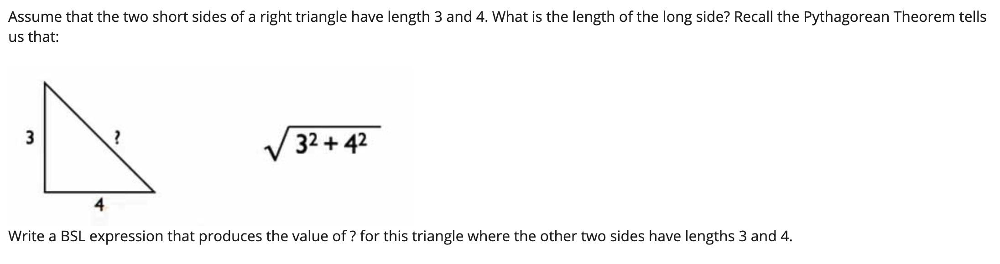
(sqrt (+ (sqr 3) (sqr 4)))
RESULTS: 5
- this is pretty much the most difficult math seen in this course
- Question 2
- If you see #i2.718281828459045 appear in the interaction pane, it means:
- It's an imaginary number.
- Someone just sent a strange tweet.
- It's a number very close to 2.718281828459045. <-
- I thought you said there wouldn't be much math!
- If you see #i2.718281828459045 appear in the interaction pane, it means:
- Question 3
- Which of the following are expressions:
sqr(+ 2 3)<-+(sqrt 2)i <-#i1.4142135623730951<-1<-)
- Which of the following are expressions:
- At this point in the course an expression is either a value, or of the form
(<primitive> <expression> ...). We will shortly add to our vocabulary of expressions.
- Question 4
- Which of the folloing are values:
sqr(+ 2 3)+(sqrt 2)#i1.4142135623730951<-1<-)
- Which of the folloing are values:
- Question 5
- What would be the result of evaluating the following expression:
(/ (* 2 3) (- 3 1))- 18
- 6
- 2
- 3 <-
- Question 6
Recall that the average of a set of numbers is the sum of the numbers divided by how many numbers there are.
Which of these expressions produces the average of the numbers 4, 6.2 and -12? Check ALL that are correct.
(/ 3 (+ 6.2 -12 4))(/ (+ -8 6.2) 3)<-(/ (+ 4 6.2 -12) 3)<--0.6<-
- Question 7
- Why are we using Beginning Student Language in this course? Select all answers that apply.
- It is simple to learn, allowing you to focus your attention on the design methods correct
- It is commonly used in industry, so you can get a job programming in BSL
- It forms the core of many other languages, which will help you transfer what you learn to other languages correct
- There are so many popular programming languages that no single language will be useful for many projects correct
- Why are we using Beginning Student Language in this course? Select all answers that apply.
Evaluation
- Question 1
- Consider the following expression:
(* (- 4 2) 3)- Select all calls to primitives.
(* (- 4 2) 3)<-,*(- 4 2)<-3-42
(* (- 4 2) 3)and(- 4 2)are primitive calls because they are expressions that start with open parenthesis and the name of a primitive operation.
- Question 2
- Consider the following expression:
(* (- 4 2) 3)- Select all the operators.
(* (- 4 2) 3)(*)<-(- 4 2)3-<-42
- Question 3
- Consider the following expression:
(* (- 4 2) 3)- Select all operands.
(* (- 4 2) 3)(*)(- 4 2)<-3<--4<-2<-
- Question 4
- What is the next step in the following evaluation?
(/ (* 3 4) (+ (- 7 4) 3))(/ 12 (+ (- 7 4) 3))(/ 12 (+ 3 3))
- What is the next step in the following evaluation?
- Question 5
- What is the next step in the following evaluation?
(/ (* 3 4) (+ (- 7 4) 3))(/ 12 (+ (- 7 4) 3))(/ 12 (+ 3 3))(/ 12 6)
- What is the next step in the following evaluation?
- Question 6
- What is the next step in the following evaluation?
(/ (* 3 4) (+ (- 7 4) 3))(/ 12 (+ (- 7 4) 3))(/ 12 (+ 3 3))(/ 12 6)2
- What is the next step in the following evaluation?
Strings and Images
- Question 1
- What is the value of the expression below?
(substring "hello" 1 3)"hello""hel""ell""el"<-"he"
- Question 2
- Will the following produce any errors?
(string-append "1" "2")- Yes
- No <-
- Question 3
Which primitive is required in the following expression to produce the stop sign image below?
(______ (text "STOP" 48 "white") (regular-polygon 60 8 "solid" "red"))
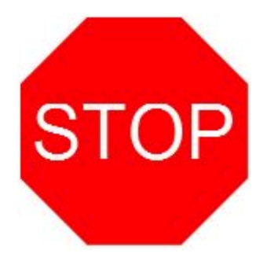
- above
- beside
- overlay <-
- append
- Question 4
Which image will the following expression produce?
(beside (square 20 "outline" "blue") (above (circle 15 "solid" "red") (triangle 20 "solid" "green")))
- 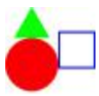
- 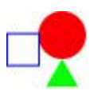
- 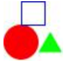
- 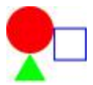
- The above will produce image 2.
- Question 5
- Assume that the image below shows an entire program file. Why does running the program produce the following error?
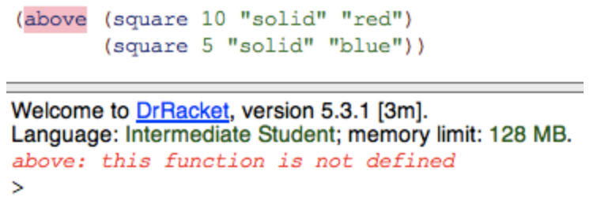
- We didn't define a function named
abovein the program. - We didn't include
(require 2htdp/image)at the beginning of the program. <- abovedoes not accept a square as an argument.
- We didn't define a function named
- Assume that the image below shows an entire program file. Why does running the program produce the following error?
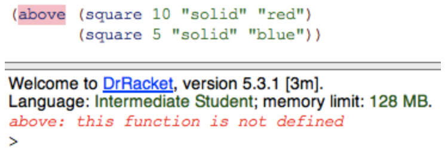
- Question 6
- We have revised the program now, why are we still getting an error?
- We still need to define a function named above.
- We need to find the collection "2htpd."
- We misspelled the name of the required module, so we need to replace "2htpd" with "2htdp." <–
- We have revised the program now, why are we still getting an error?
Constant Definitions
- Question 1
- Consider the following program:
- What result is produced when the program is run?
(define FOO (* 2 3)) ; FOO = 6 (define BAR (* FOO 2)) ; BAR = 12 (* FOO BAR) ; (* FOO BAR) = (* 6 12) = 72
RESULTS: 72
- Question 2
Given the following program:
(define FOO (* 2 3)) (define BAR (* FOO 2)) (* FOO BAR)
- What is the result of the first evaluation step?
(define FOO (* 2 3)) (define BAR (* FOO 2)) (* (* 2 3) BAR)
(define FOO (* 2 3)) (define BAR (* FOO 2)) (* 6 BAR)
(define FOO (* 2 3)) (define BAR (* (* 2 3) 2)) (* FOO BAR)
(define FOO 6) (define BAR (* FOO 2)) (* FOO BAR)
- Answer is #4.
Function Definitions
- Question 1
- Why should you use function definitions?
- To be lazy
- To make the code easier to read
- To avoid duplicated code
- All of the above <-
- Why should you use function definitions?
- Question 2
- Suppose we want a function that will give the length of the hypotenuse of any right angle triangle. Which of the following would achieve that? Remember that the expression we used when the side lengths were 3 and 4 was:
(sqrt (+ (sqr 3) (sqr 4)))(define (pythag 3 4) (sqrt (+ (sqr 3) (sqr4))))
(sqrt (+ (sqr a) (sqr b)))
(define c (sqrt (+ (sqr a) (sqr b))))
(define (pythag a b) (sqrt (+ (sqr a) (sqr b))))
- Answer is $4.
- Suppose we want a function that will give the length of the hypotenuse of any right angle triangle. Which of the following would achieve that? Remember that the expression we used when the side lengths were 3 and 4 was:
- Question 3
- What should we do to fix the following error:

- Replace
iin the program - Include
(require 2htdp/image)at the beginning of the program - Replace
iwithimg, which is the name of the parameter for this function <-
- Replace
- What should we do to fix the following error:
- Question 4
Given the function:
(define (foo a b) (+ (* 3 a) b (* b a)))
- What is the first step of
(foo (+ 1 1) 4), and what is the result of that step?Replace
aandbwith(+ 1 1)and 4 everywhere.(define (foo (+ 1 1) 4) (+ (* 3 (+ 1 1)) 4 (* 4 (+ 1 1))) (foo 2 4)
Replace
(foo 2 4)with the body offooin which we replace all occurrences ofawith(+ 1 1), andbwith 4.(+ (* 3 2) 4 (* 4 2))
Evaluate
(+ 1 1)and replace it in the function call offoo. <–(foo 2 4)
- Question 5
After the previous step of the evaluation we are left with:
(foo (+1 1) 4) ; into (foo 2 4)
- What is the next step of the evaluation and what does that leave us with?
Replace
aandbwith 2 and 4 everywhere.(define (foo 2 4) (+ (* 3 2) 4 (* 4 2))) (foo 2 4)
Replace
(foo 2 4)with the body offooin which we replace all occurrences ofawith 2, andbwith 4. <-(+ (* 3 2) 4 (* 4 2))
Replace
(foo 2 4)with the body offoo.(+ (* 3 a) b (* b a))
- Question 6
After the previous step of the evaluation we are left with:
(foo (+ 1 1) 4) ;into (foo 2 4) ; into (+ (* 3 2) 4 (* 4 2))
- What is the next step of evaluation and what does that leave us with?
(* 3 2)is replaced with 6 and(* 4 2)is replaced with 8.(+ 6 4 8)
(* 4 2)is replaced with 8.(+ (* 3 2) 4 8)
(* 3 2)is replaced with 6. <-(+ 6 4 (* 4 2)))
- Question 7
After the previous step of evaluation we are left with:
(foo (+ 1 1) 4) ;into (foo 2 4) ;into (+ (* 3 2) 4 (* 4 2)) ;into (+ 6 4 (* 4 2))
- What is the next step of evaluation and what does that leave us with?
6 and 4 are added to produce 10.
(+ 10 (* 4 2))
(* 4 2)is replaced with 8. <-(+ 6 4 8)
(* 4 2)is replaced with 8 and 4, 6, and 8, are aded together.18
- Question 8
After the previous step of the evaluation we are left with:
(foo (+ 1 1) 4) ;into (foo 2 4) ;into (+ (* 3 2) 4 (* 4 2)) ;into (+ 6 4 (* 4 2)) ;into (+ 6 4 8)
- What is the next step of the evaluation and what does that leave us with?
6 and 4 are added to produce 10.
(+ 10 8)
6, 4, and 8 are added to produce 14.
146, 4, and 8 are added to produce 18. <-
18
Booleans and if expressions
- Question 1
What is the value of the expression below?
(> 10 5)
true<-false"true""false"
- Question 2
What about this one?
(> 5 5)
truefalse<-"true""false"
- Question 3
- Which of the following are predicates? Select all that apply.
- +
- = <-
- string=? <-
- string-append
- Which of the following are predicates? Select all that apply.
- Question 4
- Which of the followin expressions produces
trueonly when the width of animg1is greater than 50 pixels?(> (image-width IMG1 50))(> (image-width IMG1) 50)<-(>= (image-width IMG1) 50)(> 50 (image-width IMG1))
- Which of the followin expressions produces
- Question 5
- How can we fix the following error:
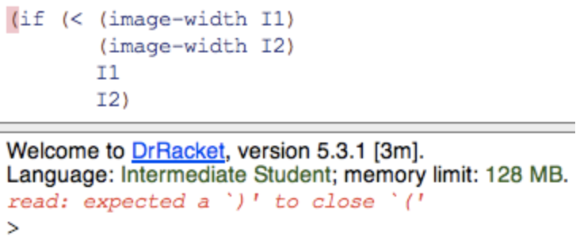
- Remove the '(' before if.
- Add ')' after I2) at the end of the code above.
- Add ')' after (image-width I1)
Add ')' after (image-width I2) <-
;it should be (if (< (image-width I1) (image-width I2)) I1 I2)
- How can we fix the following error:
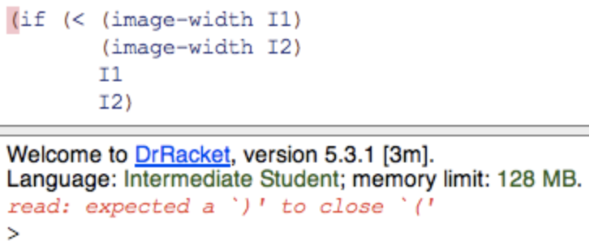
- Question 6
What is the value of the
ifexpression below?(if (> (string-length "hello") 10) "long" "short")
RESULTS: "short"
truefalse"long""short"<-
- Question 7
What is the value of the expression below?
(or (< 2 1) (> 3 2) (= 4 4))
true<-false
- Question 8
Which comparisons can be performed when the expression below is evaluated?
(or (< 2 1) (> 3 2) (= 4 4))
- Just the <
- Just the >
- The < and the > <-
- All three, <, >, =
- an
orexpression will short-circuit and returntrueas soon as an expression returns true.
- an
- Question 9
Given:
(define B1 true) (define B2 false)
What is the value of:
(or (not B1) B2)
truefalse<-(not B1)isfalseandB2is also defined asfalse.
Extra Practice
More Arithmetic Expressions
- Write two expressions that multiply the numbers 3, 5 and 7.
- The first should take advantage of the fact that * can accept more than 2 arguments.
The second should build up the result by first multiplying 3 times 5 and then multiply the result of that by 7.
(* 3 5 7) (* (* 3 5) 7)
RESULTS: 105
Tile
- Use the DrRacket square, beside and above functions to create an image like this one:
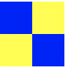
(require 2htdp/image) (define blue (square 20 "solid" "blue")) (define yellow (square 20 "solid" "yellow")) (define top (beside blue yellow)) (define bot (beside yellow blue)) (define image (above top bot)) image
Compare Images
- Based on the two constants provided, write three expressions to determine whether:
- IMAGE1 is taller than IMAGE2
- IMAGE1 is narrower than IMAGE2
- IMAGE1 has both the same width AND height as IMAGE2
(require 2htdp/image) (define IMAGE1 (rectangle 10 15 "solid" "red")) (define IMAGE2 (rectangle 15 10 "solid" "red")) (if (> (image-height IMAGE1) (image-width IMAGE2)) "IMAGE1 is taller" "IMAGE2 is taller" ) (if (< (image-width IMAGE1) (image-width IMAGE2)) "IMAGE1 is narrower" "IMAGE2 is narrower" ) (if (and (= (image-width IMAGE1) (image-width IMAGE2)) (= (image-height IMAGE1) (image-height IMAGE2)) ) "true" "false")
RESULTS: "IMAGE2 is taller" "IMAGE1 is narrower" "false"
Function Writing
- Write a function that consumes two numbers and produces the larger of the two.
(define compare (lambda (a b) (if (> a b) a b ) ) ) (compare 5 2)
RESULTS: 5
Intro lab questions
Problem 1
Use string primitives to create an expression that concatenates
prefixandsuffixand adds "_" between them (so you get "hello_world" when you run the program).(define (concat a b) (string-append a "_" b) ) (concat "hello" "world")
RESULTS: "hello_world"
Problem 2
Use string primitives to create an expression that adds "_" at position i (the position that is i characters from the left of the string). Again, in this particular example, the expected result is "hello_world".
(define addunderscore (lambda (phrase i) (string-append (substring phrase 0 i) "_" (substring phrase i (string-length phrase)) ) ; this append the substring of index 0-i to "_" to the substring of index i-(string-length phrase) ) ) (addunderscore "helloworld" 5)
RESULTS: "hello_world"
Problem 3
Create an expression that counts the number of pixels in the CAT image.
- i don't have the cat image, but this should still work.
(require 2htdp/image) (* (image-width M1P3.png) (image-height M1P3.png))
Problem 4
- Create an expression that computes whether CAT is "tall" (height is larger than its width), "wide" (width is larger than its height), or "square" (height is the same as its width).
(require 2htdp/image) (define imagecheck (lambda (image1) (if (> (image-height image1) (image-width image1)) "tall" ; returns true if image is taller (if (= (image-height image1) (image-width image1)) ; if not, it will check if it's square or wide "square" "wide") ) ) ) ;; it would be better to use cond here, but that will be covered later in the course. (imagecheck (rectangle 20 20 "solid" "red")) (imagecheck (rectangle 20 30 "solid" "red")) (imagecheck (rectangle 30 20 "solid" "red"))
RESULTS: "square" "tall" "wide"
Problem 5
- Create an expression that computes whether the first character in STR is "h". In this example, the expected result is true.
(define checkifh (lambda (phrase) (string-ci=? (string-ith phrase 0) "h") ; checks if the first letter of phrase is equal to "h" ) ) (checkifh "hello_world") (checkifh "bye_world")
RESULTS: #true #false